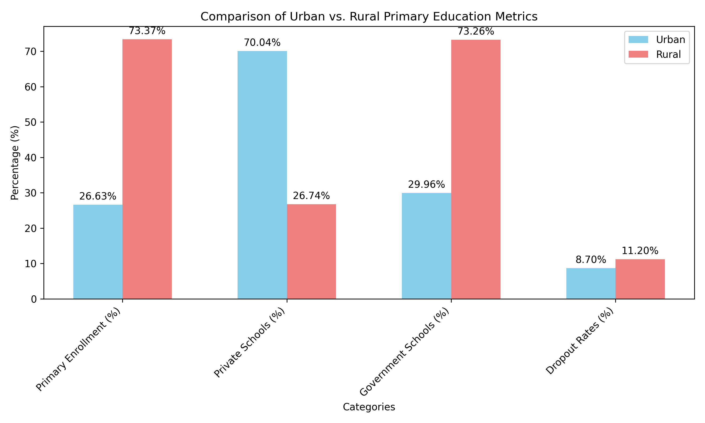

A Beautiful Mind (2001)
The Unfolding Story: A System in Question
"Classes will dull your mind." This thought-provoking quote from *A Beautiful Mind* mirrors the very essence of a dilemma faced by millions within India’s education system. Are we nurturing creativity and critical thinking, or are we merely producing individuals adept at rote learning? The question demands an exploration into the ethical layers of our education system, interwoven with socioeconomic realities, outdated methodologies, and policy aspirations such as NEP 2020.
Introduction: Unveiling Ethical Challenges in India’s Education System
The Indian education system—a mammoth network serving over 250 million students—faces an ethical conundrum. It aspires to foster universal education while grappling with inequities, resource limitations, and a focus on standardized testing. NEP 2020 emerged as a beacon of change, promising reforms to tackle these systemic issues. But as with all ambitious endeavors, its implementation has unearthed a complex web of challenges.
Ethical Issues in India's Education System: A Complex Web
1. Socioeconomic Disparities and Unequal Access to Education
Education is often described as the great equalizer. Yet, in India, it remains a privilege inaccessible to many. Students from underprivileged backgrounds face barriers such as inadequate infrastructure, untrained educators, and a lack of digital access. Rural schools—particularly those in underserved regions—struggle with basic necessities. Recent data indicates that while 73.37% of students in rural areas are enrolled in primary education, only 26.63% of their urban counterparts are similarly enrolled. This highlights the rural focus on primary schooling but also raises questions about retention and access to quality education in rural settings.
Teacher availability and infrastructure quality are critical factors influencing educational outcomes in India. Recent data indicates that over 20% of teaching positions remain unfilled, with many educators lacking access to professional development opportunities, adversely affecting their teaching effectiveness [14]. Furthermore, less than 40% of schools meet the ideal student-teacher ratio as outlined by the Right to Education Act (RTE), underscoring significant disparities in teacher distribution [15]. In terms of infrastructure, many schools, especially in rural areas, lack adequate classrooms, proper seating, and basic facilities such as lighting and ventilation [15].
The enrollment data also reveals disparities in the type of schools attended. In urban areas, 70.04% of students attend private schools, reflecting better access to resources and infrastructure, while only 26.74% of rural students have access to private institutions. Conversely, government schools cater to 73.26% of rural students but only 29.96% of urban students, demonstrating the heavy reliance on public institutions in rural India. Dropout rates further underscore these challenges: urban areas show a lower dropout rate of 8.7%, compared to 11.2% in rural areas, highlighting persistent retention issues in rural schools.
Source of graph: Derived from primary education enrollment and school data (2022-23).
NEP 2020 aims to address these disparities by promoting "universal access" to quality education. However, the allocation of resources tells a different story. Investment in digital tools—essential for bridging the rural-urban gap—remains concentrated in urban hubs. This raises an ethical question: Can equity be achieved without equitable distribution of resources?
2. Teacher Training and Quality of Education
Nishant Saxsena, in an article of Times of India writes, "India boasts a rich tapestry of cultures and experiences, but a stark divide separates its rural and urban landscapes. This disparity extends to education, with a 2021 UNESCO report highlighting a significant gap in student-teacher ratios (25:1 in rural areas compared to 18:1 in urban areas)."
At the heart of any education system is its teachers. Unfortunately, in India, teacher training and support are inconsistent at best. Government schools, often the only option for rural families, rely heavily on outdated teaching methods. Teacher absenteeism further compounds the issue, leaving students ill-equipped for real-world challenges.
According to the 2021 State of the Education Report for India: No Teacher No Class, a UNESCO publication, there is a significant shortage of teachers in India:
- Teacher vacancies: An estimated 11.16 lakh (1.116 million) vacancies exist across the country.
- Disparity in rural vs urban areas: 69% of these teacher vacancies are concentrated in rural areas, highlighting the unequal distribution of teachers between rural and urban schools.
- Single-teacher schools: Nearly 1.2 lakh schools operate with just one teacher, predominantly in remote or rural areas, facing challenges in providing a well-rounded education to students.
The data paints a concerning picture of teacher availability in India, particularly in rural areas. The lack of teachers can negatively impact the quality of education and create learning gaps for students.
NEP 2020 proposes a revamp, emphasizing continuous professional development. However, systemic issues—such as poor infrastructure and lack of accountability—impede progress. Ethical concerns arise: How do we ensure that every child, regardless of their geographic or economic background, receives quality instruction?
3. The Pressure on Students: Mental Health Crisis
The weight of academic success in India often feels like a Sisyphean task for students. High-stakes exams such as IIT-JEE and NEET dominate the narrative, pushing students into a cycle of stress and anxiety. The result? A growing mental health crisis, with nearly two-thirds (63.5%) of senior high school students in Kolkata reporting stress due to academic pressure according to a study in 2015 [7].
This study also found that over half (66%) of the students reported feeling pressure from their parents for better academic performance. About one-third (32.6%) of the students were symptomatic of psychiatric caseness, and 81.6% reported examination-related anxiety. Academic stress was positively correlated with parental pressure and psychiatric problems, while examination-related anxiety was also positively related to psychiatric problems [7].
A more recent 2024 NCRB report reveals a worrying surge in student suicides over the last ten years, with a fifty percent increase in male student suicides and a sixty-one percent increase in female student suicides [8]. While NEP 2020 acknowledges the importance of mental health, its implementation is sporadic. Schools often lack trained counselors, leaving students without essential emotional support. The ethical implications are stark: Can we continue to prioritize scores over students' well-being?
- High Expectations from Parents and Society: A lot of youngsters feel pressured to live up to social norms and their parents' aspirations. This immense pressure to excel leads to significant stress and anxiety [8].
- Competitive Exams: Board exams, JEE, NEET, and other entrance exams are extremely competitive, acting as gateways to esteemed universities. The pressure to achieve high rankings causes anxiety and sleepless nights [8].
- Lack of Improvement in Mental Health Services in Schools: Despite NEP 2020's vision, schools lack adequate trained counselors for emotional support [8].
These stressors contribute to severe outcomes, such as:
- Anxiety and Panic Attacks
- Depression
- Burnout
- Low Self-Esteem
4. Inclusivity: Education for All or Education for the Few?
Inclusivity lies at the heart of NEP 2020, promising equitable access to education for all. However, reality often paints a more complex picture. Despite positive trends in enrollment statistics, marginalized groups—including tribal communities, children with disabilities, and girls in rural areas—continue to face significant barriers. Infrastructure remains inadequate, digital access is uneven, and biases—both societal and systemic—persist.
For instance, while the enrollment of Scheduled Castes (SC) students increased by 12.3% to 66.23 lakh between 2020-21 and 2021-22, and Scheduled Tribes (ST) enrollment rose by 6.5% to 27.10 lakh in the same period, these figures still highlight gaps in true inclusivity. Similarly, Other Backward Classes (OBC) enrollment showed an 8.7% increase, reaching 1.63 crore. Although these numbers indicate progress, they also underscore the challenges that marginalized communities face in accessing quality education.
Efforts to support children with disabilities remain fragmented. Schools often lack the necessary infrastructure and trained counselors to accommodate their needs. This gap in implementation leaves many students without essential support, pushing them further behind. Furthermore, the digital divide exacerbates disparities, with rural and marginalized students struggling to access online education due to limited internet and digital resources.
While policies and provisions under NEP 2020 aim to bridge these gaps, the transition from vision to execution has been inconsistent. For instance, despite a significant rise in female enrollment—from 2.01 crore in 2020-21 to 2.07 crore in 2021-22—the systemic challenges faced by girls in rural areas remain a critical concern. Similarly, the growing enrollment of students from minority communities, with a 38% increase since 2014-15, shows progress but also calls for sustained efforts to achieve true inclusivity.
NEP 2020 has laid a strong foundation for an inclusive education system, but to truly live up to its ideals, focused interventions addressing financial, infrastructural, and systemic challenges are imperative. Without these, many students will continue to fall through the cracks of an education system striving to ensure education for all.
The Vision of NEP 2020: Reforms for the Future
NEP 2020 aspires to revolutionize India's education system by addressing its fundamental flaws while paving the way for a more equitable and innovative future. With its focus on holistic and multidisciplinary education, the policy envisions students evolving as critical thinkers, creators, and problem solvers. This aligns closely with the nation's long-term objective of fostering an inclusive society driven by intellectual and ethical excellence.
At its core, NEP 2020 emphasizes moving away from rote memorization toward fostering creativity and critical thinking. This shift is reflected in proposed curriculum changes, designed to create lifelong learners equipped for dynamic, real-world challenges. By integrating vocational education early in the learning process, the policy also aims to make education more practical and industry-relevant.
However, the realization of this vision is deeply intertwined with systemic reforms, substantial resource allocation, and bridging the gaps between policy design and implementation. For instance, while the focus on Early Childhood Care and Education (ECCE) recognizes the importance of foundational literacy and numeracy, it requires significant infrastructure investment and workforce training—elements currently lacking in many regions. A study by Sharma et al. (2023) highlights the challenges of implementing ECCE in Rajasthan, India, including:
- Lack of awareness among parents: Many parents are unaware of the importance of ECCE for their children's development.
- Inadequate infrastructure in Anganwadis: Anganwadis (rural childcare centers) often lack proper infrastructure, including adequate learning materials and play areas.
- Shortage of well-trained Anganwadi workers: There is a shortage of Anganwadi workers who have received specialized training in early childhood education.
The Central Square Foundation (CSF) report also emphasizes the need for well-trained teachers. Their report states that only 34% of teachers had undergone ECE training within the past year. This highlights the need for increased investment in teacher training programs specifically designed for ECCE.
Addressing these challenges is crucial for the successful implementation of NEP 2020's vision for ECCE. By investing in infrastructure development, providing comprehensive teacher training programs, and raising awareness among parents, India can create a strong foundation for its future generations.
According to a Times of India article, the funding for NEP 2020 has crossed ₹1.3 lakh crore over the past three years. The Samagra Shiksha scheme, a key initiative for NEP 2020 implementation, has seen a steady rise in funding with allocations reaching ₹45,830.21 crore in 2024-25. However, the article also highlights that the disbursement of funds to states remains slow. Only ₹540.56 crore has been disbursed to states over the last two years, and ₹119.17 crore in the current financial year (as of the article's publication date). This indicates a gap between allocated funds and actual spending on the ground, which may hinder the progress of NEP 2020 initiatives like ECCE.
Challenges in Implementing NEP 2020: A Critical Review
While NEP 2020 presents a comprehensive blueprint for reform, its implementation remains fraught with challenges. The stark rural-urban divide continues to obstruct equitable access to quality education. In many rural regions, schools are under-resourced, and teachers struggle with inadequate training and infrastructural support. Consequently, the disparity in learning outcomes persists despite policy interventions.
One of the most ambitious aspects of NEP 2020 is its emphasis on digital learning. However, the rapid shift to online education during the COVID-19 pandemic revealed significant gaps in digital infrastructure. Rural and economically weaker sections of society faced acute challenges, from the lack of internet connectivity to the unaffordability of devices like smartphones and laptops. This raises the ethical dilemma of whether pushing digital education without addressing these barriers might inadvertently widen existing inequalities.
[Placeholder: Include a chart comparing internet penetration rates in rural versus urban India and its correlation with digital learning outcomes]
Moreover, the policy’s decentralized implementation strategy leaves much to the discretion of state governments and local educational bodies. While this approach aims to cater to regional needs, it has also resulted in inconsistent progress. States with better resources and governance structures tend to advance more rapidly, leaving less-developed states lagging. A cohesive national framework with robust monitoring mechanisms is essential to mitigate this imbalance.
[Placeholder: Insert statistics on state-wise NEP 2020 implementation progress, highlighting disparities]
Integrating Mental Health and Well-being into Education
The mental health crisis among Indian students, exacerbated by intense academic pressure and societal expectations, is one of the most pressing ethical issues in education today. NEP 2020 recognizes this challenge by advocating for the inclusion of mental health awareness and counseling services in schools. Yet, ground-level implementation remains sporadic at best, particularly in rural areas where awareness and resources are minimal.
The culture of high-stakes examinations, which dominates the Indian education system, further compounds this issue. The pressure to secure admission into prestigious institutions often leads to severe stress, anxiety, and in extreme cases, suicide. Addressing this requires a systemic overhaul, not only of examination structures but also of the societal mindset that equates academic performance with self-worth.
[Placeholder: Add a bar chart illustrating the rise in student stress levels and mental health issues over the past decade]
Incorporating life skills education, mindfulness practices, and accessible mental health resources into the curriculum can foster a healthier and more supportive learning environment. Schools and policymakers must prioritize these initiatives to ensure that education nurtures both intellectual and emotional well-being.
Inclusivity: A Vision Yet to Be Realized
Inclusivity is a cornerstone of NEP 2020’s vision, aiming to provide equitable education opportunities for marginalized communities. However, the gap between policy ideals and real-world outcomes remains significant. Children with disabilities, girls from rural areas, and tribal students often face systemic barriers that prevent them from fully participating in the education system.
For instance, schools frequently lack basic infrastructure, such as ramps and accessible toilets, required to accommodate students with disabilities. Additionally, cultural biases and financial constraints often discourage families in rural areas from prioritizing girls’ education. While NEP 2020 addresses these challenges theoretically, its practical implementation requires a stronger commitment to resource allocation and community engagement.
[Placeholder: Insert a pie chart illustrating the percentage of schools with inclusive infrastructure across India]
Efforts to train teachers in inclusive pedagogy and sensitize them to the needs of diverse learners are equally critical. Without these measures, the promise of “education for all” risks being reduced to mere rhetoric, leaving behind those who need support the most.
Conclusion: Bridging the Gap Between Vision and Reality
The ethical challenges within India’s education system, though deeply entrenched, are not insurmountable. NEP 2020 offers a visionary framework for reform, but its success depends on the collective will of policymakers, educators, and society at large. By addressing socioeconomic disparities, enhancing teacher training, integrating mental health resources, and fostering inclusivity, India can move closer to realizing its goal of universal and equitable education.
[Placeholder: Add a roadmap graphic summarizing actionable steps for NEP 2020 implementation]
As we reflect on these challenges, it becomes evident that bridging the gap between policy vision and ground realities is not merely a matter of administrative efficiency—it is a moral imperative. The future of millions of young minds depends on our ability to create an educational ecosystem that upholds equity, empathy, and excellence.
References
- Education System in India - GeeksforGeeks
- Education in India - Wikipedia
- Education in India: A Detailed Analysis - Unacademy
- Understanding the New Education Policy in India - ISPP
- Closing the Gap: Building Bridges - Times of India Blog
- Crime in India Statistics 2024 - NCRB
- Parental Pressure, Academic Stress, and Exam-related Anxiety - ResearchGate
- Academic Stress, Parental Pressure, Anxiety, and Mental Health among Indian High School Students - International Journal of Psychology and Behavioral Science
- Overcoming Academic Pressure and Mental Health Care in India: Review - SAR Journal of Psychiatry Neuroscience
- Bridging Educational Disparities in India: An Analysis of AISHE 2020-21 Data by Social Groups - Education for All in India
- IJNRD Paper by Sharma et al. (2023)
- Central Square Foundation Report (2023)
- Times of India Article on NEP 2020 Funding
- Outlook India: A Critical Analysis of the Quality of Education in Indian Schools
- Varthana: Importance of School Infrastructure in Education
Comments